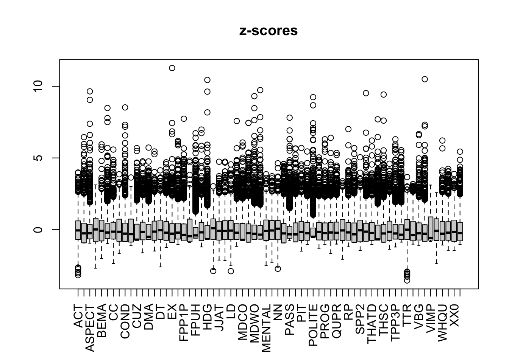
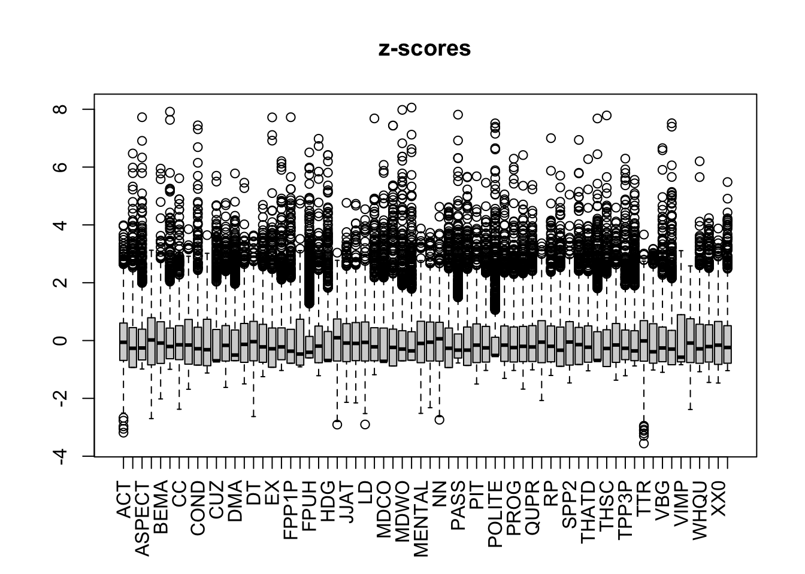
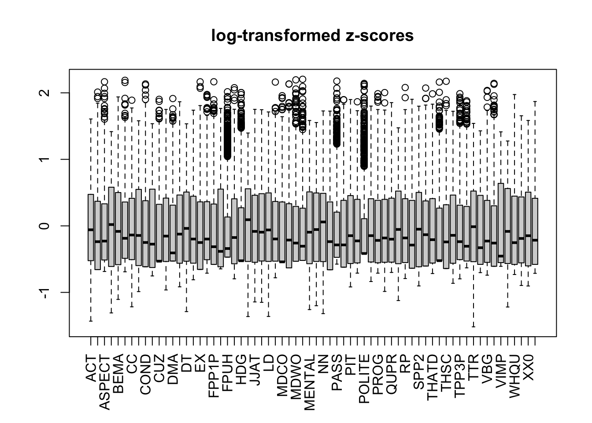

# Read in Textbook Corpus data# This .tsv file corresponds to the "mixed normalised frequency" output of the MFTE Perl v. 3.1TxBcounts<-read.delim(here("MFTE_data", "Outputs", "TxB900MDA_3.1_normed_complex_counts.tsv"), header =TRUE, stringsAsFactors =TRUE)TxBcounts<-TxBcounts%>%filter(Filename!=".DS_Store")%>%droplevels(.)str(TxBcounts)# Check sanity of data
'data.frame': 2014 obs. of 84 variables:
$ Filename: Factor w/ 2014 levels "Access_1_Informative_0001.txt",..: 333 2008 1644 389 447 1666 237 477 1317 16 ...
$ Words : int 931 889 750 979 690 694 547 967 927 840 ...
$ AWL : num 4.57 4.48 3.9 3.99 4.7 ...
$ TTR : num 0.4 0.435 0.505 0.453 0.59 ...
$ LD : num 0.594 0.533 0.516 0.545 0.59 ...
$ DT : num 33 41.9 39.4 21.1 28.2 ...
$ JJAT : num 7.93 8.73 18.9 7.37 25.74 ...
$ POS : num 2.2 0 0 0 0.99 ...
$ NCOMP : num 7.93 3.93 4.72 16.84 12.87 ...
$ QUAN : num 2.2 5.68 11.02 6.84 2.97 ...
$ ACT : num 22.4 36.2 23.9 30.6 43.8 ...
$ ASPECT : num 3.731 8.511 2.817 0.901 6.25 ...
$ CAUSE : num 0 1.06 1.41 2.7 2.08 ...
$ COMM : num 29.85 24.47 9.86 8.11 16.67 ...
$ CUZ : num 0 0 1.409 0.901 0 ...
$ CC : num 22.4 30.9 45.1 27.9 68.8 ...
$ CONC : num 0 0 0 0 4.17 ...
$ COND : num 1.49 0 1.41 1.8 0 ...
$ EX : num 0.746 0 0 2.703 0 ...
$ EXIST : num 0.746 2.128 8.451 1.802 12.5 ...
$ ELAB : num 0 0 0 0 0 ...
$ FREQ : num 3.731 3.192 2.817 0.901 2.083 ...
$ JJPR : num 8.21 8.51 12.68 13.51 12.5 ...
$ MENTAL : num 25.4 21.3 36.6 28.8 20.8 ...
$ OCCUR : num 0.746 3.192 7.042 0 0 ...
$ DOAUX : num 8.96 7.45 1.41 17.12 0 ...
$ QUTAG : num 0 0 0 0 0 0 0 0 0 0 ...
$ QUPR : num 0.746 0 5.634 0.901 4.167 ...
$ SPLIT : num 0 0 1.409 0.901 4.167 ...
$ STPR : num 0.746 3.192 1.409 2.703 0 ...
$ WHQU : num 18.66 13.83 8.45 11.71 0 ...
$ THSC : num 1.492 2.128 0 0.901 2.083 ...
$ WHSC : num 5.22 6.38 5.63 3.6 16.67 ...
$ CONT : num 3.73 0 19.72 30.63 4.17 ...
$ VBD : num 1.49 9.57 38.03 3.6 18.75 ...
$ VPRT : num 35.1 31.9 26.8 75.7 54.2 ...
$ PLACE : num 0.746 2.128 0 4.505 6.25 ...
$ PROG : num 5.22 3.19 2.82 7.21 6.25 ...
$ HGOT : num 0 0 0 1.8 0 ...
$ BEMA : num 8.96 8.51 19.72 17.12 14.58 ...
$ MDCA : num 1.49 3.19 1.41 3.6 4.17 ...
$ MDCO : num 0 0 1.41 0 0 ...
$ TIME : num 2.99 2.13 5.63 4.5 2.08 ...
$ THATD : num 5.22 0 0 3.6 0 ...
$ THRC : num 0 0 0 0 0 0 0 0 0 0 ...
$ VIMP : num 59.7 53.19 2.82 6.31 6.25 ...
$ MDMM : num 0 0 0 0 0 0 0 0 0 0 ...
$ ABLE : num 0 0 0 0 0 0 0 0 0 0 ...
$ MDNE : num 0 0 4.23 6.31 6.25 ...
$ MDWS : num 1.49 0 2.82 1.8 10.42 ...
$ MDWO : num 0.746 2.128 22.535 2.703 0 ...
$ XX0 : num 2.24 4.26 7.04 9.01 4.17 ...
$ PASS : num 0.746 2.128 2.817 1.802 4.167 ...
$ PGET : num 0 0 0 0 0 0 0 0 0 0 ...
$ VBG : num 0.746 10.638 7.042 10.811 14.583 ...
$ VBN : num 0 3.19 0 0 4.17 ...
$ PEAS : num 0 0 0 0.901 4.167 ...
$ GTO : num 0.746 0 2.817 0 0 ...
$ FPP1S : num 0.746 1.064 60.563 45.946 0 ...
$ FPP1P : num 0 0 18.3 22.5 20.8 ...
$ TPP3S : num 3.731 7.447 1.409 0.901 0 ...
$ TPP3P : num 5.97 4.26 0 1.8 12.5 ...
$ SPP2 : num 23.9 29.8 23.9 29.7 33.3 ...
$ PIT : num 1.49 0 7.04 11.71 12.5 ...
$ PRP : num 0 0 0 0 0 ...
$ RP : num 0 5.319 4.225 0.901 6.25 ...
$ AMP : num 0 0.113 0.267 0.102 0.145 ...
$ CD : num 0.43 1.012 2.4 0.511 1.304 ...
$ DEMO : num 0.537 0.562 0.267 0.306 0.145 ...
$ DMA : num 0.107 0 2 0.204 0 ...
$ DWNT : num 0 0 0.133 0.204 0 ...
$ EMO : num 0 0 0 0 0 0 0 0 0 0 ...
$ EMPH : num 0 0.113 0.667 0.715 0.29 ...
$ FPUH : num 0 0.113 0.8 0.102 0 ...
$ HDG : num 0.107 0 0.667 0 0.145 ...
$ HST : num 0 0 0 0 0 0 0 0 0 0 ...
$ IN : num 10.31 14.4 10.13 7.97 10.87 ...
$ LIKE : num 0.215 0.225 0.4 0.204 0 ...
$ NN : num 24.4 25.8 16.9 19.4 29.3 ...
$ POLITE : num 0 0 0.4 0.306 0 ...
$ RB : num 1.074 0.338 1.467 1.941 0.725 ...
$ SO : num 0 0 0.267 0.409 0.29 ...
$ URL : num 0 0 0 0 0 ...
$ YNQU : num 0.43 1.012 0.667 0.511 0 ...
# Adding a textbook proficiency levelTxBLevels<-read.delim(here("metadata", "TxB900MDA_ProficiencyLevels.csv"), sep =",")TxBcounts<-full_join(TxBcounts, TxBLevels, by ="Filename")%>%mutate(Level =as.factor(Level))%>%mutate(Filename =as.factor(Filename))summary(TxBcounts$Level)# Check distribution and that there are no NAs
A B C D E
292 407 506 478 331
Code
TxBcounts%>%select(Filename, Level)%>%sample_n(20)# Check matching on random sample
Filename Level
1 Access_3_Informative_0001.txt C
2 Access_3_Spoken_0013.txt C
3 JTT_3_Informative_0007.txt D
4 New_GreenLine_1_Narrative_0004.txt A
5 HT_4_Narrative_0004.txt C
6 Solutions_Intermediate_Plus_Informative_0016.txt D
7 JTT_3_Instructional_0009.txt D
8 GreenLine_1_Instructional_0004.txt A
9 Piece_of_cake_3e_Instructional_0008.txt D
10 NB_2_Narrative_0010.txt E
11 Access_5_Instructional_0004.txt E
12 Access_2_Spoken_0002.txt B
13 GreenLine_2_Informative_0001.txt B
14 Access_4_Spoken_0012.txt D
15 Achievers_B1_plus_Spoken_0003.txt D
16 New_GreenLine_5_Spoken_0001.txt E
17 Achievers_B1_plus_Personal_0001.txt D
18 GreenLine_4_Narrative_0010.txt D
19 New_GreenLine_3_Narrative_0005.txt C
20 English_in_Mind_3_Instructional_0006.txt C
Code
# Adding a register variable from the file namesTxBcounts$Register<-as.factor(stringr::str_extract(TxBcounts$Filename, "Spoken|Narrative|Other|Personal|Informative|Instructional|Poetry"))# Add a variable for Textbook Registersummary(TxBcounts$Register)
TxBcounts$Register<-car::recode(TxBcounts$Register, "'Narrative' = 'Fiction'; 'Spoken' = 'Conversation'")colnames(TxBcounts)# Check all the variables make sense
# Adding a textbook series variable from the file namesTxBcounts$Filename<-stringr::str_replace(TxBcounts$Filename, "English_In_Mind|English_in_Mind", "EIM")TxBcounts$Filename<-stringr::str_replace(TxBcounts$Filename, "New_GreenLine", "NGL")# Otherwise the regex for GreenLine will override New_GreenLineTxBcounts$Filename<-stringr::str_replace(TxBcounts$Filename, "Piece_of_cake", "POC")# Shorten label for ease of plottingTxBcounts$Series<-as.factor(stringr::str_extract(TxBcounts$Filename, "Access|Achievers|EIM|GreenLine|HT|NB|NM|POC|JTT|NGL|Solutions"))summary(TxBcounts$Series)# Extract textbook series from (ammended) filenames
# Including the French textbooks for the first year of Lycée to their corresponding publisher series from collègeTxBcounts$Series<-car::recode(TxBcounts$Series, "c('NB', 'JTT') = 'JTT'; c('NM', 'HT') = 'HT'")# # Recode final volumes of French series (see Section 4.3.1.1 on textbook selection for details)summary(TxBcounts$Series)
# Adding a textbook country of use variable from the series variableTxBcounts$Country<-TxBcounts$SeriesTxBcounts$Country<-car::recode(TxBcounts$Series, "c('Access', 'GreenLine', 'NGL') = 'Germany'; c('Achievers', 'EIM', 'Solutions') = 'Spain'; c('HT', 'NB', 'NM', 'POC', 'JTT') = 'France'")summary(TxBcounts$Country)
Conversation Fiction Informative Instructional Personal
593 285 364 647 88
3.2 Feature distributions
Code
TxBcounts%>%select(-Words)%>%keep(is.numeric)%>%tidyr::gather()%>%# This function from tidyr converts a selection of variables into two variables: a key and a value. The key contains the names of the original variable and the value the data. This means we can then use the facet_wrap function from ggplot2ggplot(aes(value))+theme_bw()+facet_wrap(~key, scales ="free", ncol =4)+scale_x_continuous(expand=c(0,0))+geom_histogram(bins =30, colour="darkred", fill ="darkred", alpha =0.5)
# Removal of meaningless features:# CD because numbers as digits were mostly removed from the textbooks# LIKE and SO because they are "bin" features designed to ensure that the counts for these two words don't inflate other categories due to mistags.TxBcounts<-TxBcounts%>%select(-c(CD, LIKE, SO))# Function to compute percentage of texts with occurrences meeting a conditioncompute_percentage<-function(data, condition, threshold){numeric_data<-Filter(is.numeric, data)percentage<-round(colSums(condition[, sapply(numeric_data, is.numeric)])/nrow(data)*100, 2)percentage<-as.data.frame(percentage)colnames(percentage)<-"Percentage"percentage<-percentage%>%filter(!is.na(Percentage))%>%rownames_to_column()%>%arrange(Percentage)if(!missing(threshold)){percentage<-percentage%>%filter(Percentage>threshold)}return(percentage)}# Calculate percentage of texts with 0 occurrences of each featurezero_features<-compute_percentage(TxBcounts, TxBcounts==0, 66.6)print(zero_features)
# Combine low frequency features into meaningful groups whenever this makes linguistic senseTxBcounts<-TxBcounts%>%mutate(JJPR =ABLE+JJPR, ABLE =NULL)%>%mutate(PASS =PGET+PASS, PGET =NULL)# Re-calculate percentage of texts with 0 occurrences of each featurezero_features<-compute_percentage(TxBcounts, TxBcounts==0, 66.6)print(zero_features)
# Drop variables with low document frequencyTxBcounts<-select(TxBcounts, -one_of(zero_features$rowname))ncol(TxBcounts)-8# Number of linguistic features remaining
3.2.2 Standardising normalised counts and identifying potential outliers
“As an alternative to removing very sparse feature, we apply a signed logarithmic transformation to deskew the feature distributions.” (Neumann & Evert)
Code
# First scale the normalised counts (z-standardisation) to be able to compare the various featuresTxBcounts%>%select(-Words)%>%keep(is.numeric)%>%scale()->TxBzcountsboxplot(TxBzcounts, las =3, main ="z-scores")# Slow to open!

Code
# If necessary, remove any outliers at this stage.TxBdata<-cbind(TxBcounts[,1:6], as.data.frame(TxBzcounts))nrow(TxBdata)
boxplot(TxBzcounts, las =3, main ="z-scores")# Slow to open!

Code
#saveRDS(TxBcounts, here("processed_data", "TxBcounts3.rds")) # Last saved 16 Feb 2024
Code
TxBzcounts%>%as.data.frame()%>%gather()%>%# This function from tidyr converts a selection of variables into two variables: a key and a value. The key contains the names of the original variable and the value the data. This means we can then use the facet_wrap function from ggplot2ggplot(aes(value))+theme_bw()+facet_wrap(~key, scales ="free", ncol =4)+scale_x_continuous(expand=c(0,0))+geom_histogram(bins =30, colour="darkred", fill ="darkred", alpha =0.5)
3.2.3 Transforming the features to (partially) deskew these distributions
Signed log transformation function inspired by the SignedLog function proposed in https://cran.r-project.org/web/packages/DataVisualizations/DataVisualizations.pdf
Code
# All features are signed log-transformed (this is also what Neumann & Evert 2021 do)signed.log<-function(x){sign(x)*log(abs(x)+1)}TxBzlogcounts<-signed.log(TxBzcounts)# Standardise first, then signed log transform# The function above would only transform the most skewed variables. This is what Lee suggests doing but it makes the interpretation of the correlations quite tricky so I abandoned this idea.# TxBzlogcounts2 <- TxBzcounts %>%# as.data.frame() %>% # mutate(across(.cols = c(AMP, ASPECT, CAUSE, COND, CUZ, DMA, EMPH, EX, EXIST, FPP1P, FPP1S, FPUH, FREQ, HDG, MDCA, MDCO, MDNE, MDWO, MDWS, OCCUR, PASS, PEAS, PLACE, POLITE, PROG, QUPR, RP, SPLIT, STPR, THATD, THRC, THSC, TPP3P, TPP3S, VBD, VBG, VBN, VIMP, WHQU, WHSC, YNQU),# .fns = signed.log)) %>% # rename_with(.cols = c(AMP, ASPECT, CAUSE, COND, CUZ, DMA, EMPH, EX, EXIST, FPP1P, FPP1S, FPUH, FREQ, HDG, MDCA, MDCO, MDNE, MDWO, MDWS, OCCUR, PASS, PEAS, PLACE, POLITE, PROG, QUPR, RP, SPLIT, STPR, THATD, THRC, THSC, TPP3P, TPP3S, VBD, VBG, VBN, VIMP, WHQU, WHSC, YNQU),# .fn = ~paste0(., '_signedlog'))boxplot(TxBzlogcounts, las=3, main="log-transformed z-scores")

Code
#saveRDS(TxBzlogcounts, here("processed_data", "TxBzlogcounts.rds")) # Last saved 16 Feb 2024
Code
TxBzlogcounts%>%as.data.frame()%>%gather()%>%# This function from tidyr converts a selection of variables into two variables: a key and a value. The key contains the names of the original variable and the value the data. This means we can then use the facet_wrap function from ggplot2ggplot(aes(value, after_stat(density)))+theme_bw()+facet_wrap(~key, scales ="free", ncol =4)+scale_x_continuous(expand=c(0,0))+scale_y_continuous(limits =c(0,NA))+geom_histogram(bins =30, colour="black", fill ="grey")+geom_density(colour ="darkred", weight =2, fill="darkred", alpha =.4)
These plots serve to illustrate the effects of the variable transformations performed in the above chunks.
Code
# This is a slightly amended version of the PerformanceAnalytics::chart.Correlation() function. It simply removes the significance stars that are meaningless with this many data points (see commented out lines below)chart.Correlation.nostars<-function(R, histogram=TRUE, method=c("pearson", "kendall", "spearman"), ...){x=checkData(R, method ="matrix")if(missing(method))method=method[1]panel.cor<-function(x, y, digits=2, prefix="", use="pairwise.complete.obs", method="pearson", cex.cor, ...){usr<-par("usr")on.exit(par(usr))par(usr =c(0, 1, 0, 1))r<-cor(x, y, use =use, method =method)txt<-format(c(r, 0.123456789), digits =digits)[1]txt<-paste(prefix, txt, sep ="")if(missing(cex.cor))cex<-0.8/strwidth(txt)test<-cor.test(as.numeric(x), as.numeric(y), method =method)# Signif <- symnum(test$p.value, corr = FALSE, na = FALSE, # cutpoints = c(0, 0.001, 0.01, 0.05, 0.1, 1), symbols = c("***", # "**", "*", ".", " "))text(0.5, 0.5, txt, cex =cex*(abs(r)+0.3)/1.3)# text(0.8, 0.8, Signif, cex = cex, col = 2)}f<-function(t){dnorm(t, mean =mean(x), sd =sd.xts(x))}dotargs<-list(...)dotargs$method<-NULLrm(method)hist.panel=function(x, ...=NULL){par(new =TRUE)hist(x, col ="light gray", probability =TRUE, axes =FALSE, main ="", breaks ="FD")lines(density(x, na.rm =TRUE), col ="red", lwd =1)rug(x)}if(histogram)pairs(x, gap =0, lower.panel =panel.smooth, upper.panel =panel.cor, diag.panel =hist.panel)elsepairs(x, gap =0, lower.panel =panel.smooth, upper.panel =panel.cor)}# Example plot without any variable transformationexample1<-TxBcounts%>%select(NN,PROG,SPLIT,ACT,FPP1S)#png(here("plots", "CorrChart-TEC-examples-normedcounts.png"), width = 20, height = 20, units = "cm", res = 300)chart.Correlation.nostars(example1, histogram=TRUE, pch=19)
# Example plot with transformed variablesexample2<-TxBzlogcounts%>%as.data.frame()%>%select(NN,PROG,SPLIT,ACT,FPP1S)#png(here("plots", "CorrChart-TEC-examples-zsignedlogcounts.png"), width = 20, height = 20, units = "cm", res = 300)chart.Correlation.nostars(example2, histogram=TRUE, pch=19)dev.off()
null device
1
3.2.4 Visualisation of feature correlations
Code
# Simple heatmap in base R (inspired by Stephanie Evert's SIGIL code)cor.colours<-c(hsv(h=2/3, v=1, s=(10:1)/10), # blue = negative correlation rgb(1,1,1), # white = no correlation hsv(h=0, v=1, s=(1:10/10)))# red = positive correlation#png(here("plots", "heatmapzlogcounts-TEC-only.png"), width = 30, height= 30, units = "cm", res = 300)heatmap(cor(TxBzlogcounts), symm=TRUE, zlim=c(-1,1), col=cor.colours, margins=c(7,7))
Code
#dev.off()
3.3 Composition of TEC texts/files entered in the MDAs
metadata<-TxBcounts%>%select(Filename, Country, Series, Level, Register, Words)%>%mutate(Volume =paste(Series, Level))%>%mutate(Volume =fct_rev(Volume))%>%mutate(Volume =fct_reorder(Volume, as.numeric(Level)))%>%group_by(Volume)%>%mutate(wordcount =sum(Words))%>%ungroup()%>%distinct(Volume, .keep_all =TRUE)# Plot for bookmetadata2<-TxBcounts%>%select(Country, Series, Level, Register, Words)%>%mutate(Volume =paste(Series, Level))%>%mutate(Volume =fct_rev(Volume))%>%#mutate(Volume = fct_reorder(Volume, as.numeric(Level))) %>% group_by(Volume, Register)%>%mutate(wordcount =sum(Words))%>%ungroup()%>%distinct(Volume, Register, .keep_all =TRUE)# This is the palette created above on the basis of the suffrager pakcage (but without needed to install the package)palette<-c("#BD241E", "#A18A33", "#15274D", "#D54E1E", "#EA7E1E", "#4C4C4C", "#722672", "#F9B921", "#267226")PlotSp<-metadata2%>%filter(Country=="Spain")%>%#arrange(Volume) %>% ggplot(aes(x =Volume, y =wordcount, fill =fct_rev(Register)))+geom_bar(stat ="identity", position ="stack")+coord_flip(expand =FALSE)+# Removes those annoying ticks before each bar labeltheme_minimal()+theme(legend.position ="none")+labs(x ="Spain", y ="Cumulative word count")+scale_fill_manual(values =palette[c(5,4,3,2,1)], guide =guide_legend(reverse =TRUE))PlotGer<-metadata2%>%filter(Country=="Germany")%>%#arrange(Volume) %>% ggplot(aes(x =Volume, y =wordcount, fill =fct_rev(Register)))+geom_bar(stat ="identity", position ="stack")+coord_flip(expand =FALSE)+labs(x ="Germany", y ="")+scale_fill_manual(values =palette[c(5,4,3,2,1)], guide =guide_legend(reverse =TRUE))+theme_minimal()+theme(legend.position ="none")PlotFr<-metadata2%>%filter(Country=="France")%>%#arrange(Volume) %>% ggplot(aes(x =Volume, y =wordcount, fill =fct_rev(Register)))+geom_bar(stat ="identity", position ="stack")+coord_flip(expand =FALSE)+labs(x ="France", y ="", fill ="Register subcorpus")+scale_fill_manual(values =palette[c(5,4,3,2,1)], guide =guide_legend(reverse =TRUE, legend.hjust =0))+theme_minimal()+theme(legend.position ="top", legend.justification ="left")PlotFr/PlotGer/PlotSp
This document outlines the steps taken to pre-process the Textbook English Corpus (TEC) data.```{r}#renv::restore() # Restore the project's dependencies from the lockfile to ensure that same package versions are used as in the original thesis.library(caret) # For its confusion matrix functionlibrary(here) # For dynamic file pathslibrary(patchwork) # For Fig. 1library(PerformanceAnalytics)library(psych) # For various useful stats functionlibrary(tidyverse)```# Data import from MFTE output```{r}#| label: TxBcounts# Read in Textbook Corpus data# This .tsv file corresponds to the "mixed normalised frequency" output of the MFTE Perl v. 3.1TxBcounts <-read.delim(here("MFTE_data", "Outputs", "TxB900MDA_3.1_normed_complex_counts.tsv"), header =TRUE, stringsAsFactors =TRUE)TxBcounts <- TxBcounts %>%filter(Filename!=".DS_Store") %>%droplevels(.)str(TxBcounts) # Check sanity of datanrow(TxBcounts) # Should be 2014 files# Adding a textbook proficiency levelTxBLevels <-read.delim(here("metadata", "TxB900MDA_ProficiencyLevels.csv"), sep =",")TxBcounts <-full_join(TxBcounts, TxBLevels, by ="Filename") %>%mutate(Level =as.factor(Level)) %>%mutate(Filename =as.factor(Filename))summary(TxBcounts$Level) # Check distribution and that there are no NAsTxBcounts %>%select(Filename, Level) %>%sample_n(20) # Check matching on random sample# Adding a register variable from the file namesTxBcounts$Register <-as.factor(stringr::str_extract(TxBcounts$Filename, "Spoken|Narrative|Other|Personal|Informative|Instructional|Poetry")) # Add a variable for Textbook Registersummary(TxBcounts$Register)TxBcounts$Register <- car::recode(TxBcounts$Register, "'Narrative' = 'Fiction'; 'Spoken' = 'Conversation'")colnames(TxBcounts) # Check all the variables make sense# Adding a textbook series variable from the file namesTxBcounts$Filename <- stringr::str_replace(TxBcounts$Filename, "English_In_Mind|English_in_Mind", "EIM") TxBcounts$Filename <- stringr::str_replace(TxBcounts$Filename, "New_GreenLine", "NGL") # Otherwise the regex for GreenLine will override New_GreenLineTxBcounts$Filename <- stringr::str_replace(TxBcounts$Filename, "Piece_of_cake", "POC") # Shorten label for ease of plottingTxBcounts$Series <-as.factor(stringr::str_extract(TxBcounts$Filename, "Access|Achievers|EIM|GreenLine|HT|NB|NM|POC|JTT|NGL|Solutions"))summary(TxBcounts$Series) # Extract textbook series from (ammended) filenames# Including the French textbooks for the first year of Lycée to their corresponding publisher series from collègeTxBcounts$Series <-car::recode(TxBcounts$Series, "c('NB', 'JTT') = 'JTT'; c('NM', 'HT') = 'HT'") # # Recode final volumes of French series (see Section 4.3.1.1 on textbook selection for details)summary(TxBcounts$Series)# Adding a textbook country of use variable from the series variableTxBcounts$Country <- TxBcounts$SeriesTxBcounts$Country <- car::recode(TxBcounts$Series, "c('Access', 'GreenLine', 'NGL') = 'Germany'; c('Achievers', 'EIM', 'Solutions') = 'Spain'; c('HT', 'NB', 'NM', 'POC', 'JTT') = 'France'")summary(TxBcounts$Country)# Re-order variablescolnames(TxBcounts)TxBcounts <- TxBcounts %>%select(order(names(.))) %>%# Order alphabetically firstselect(Filename, Country, Series, Level, Register, Words, everything())```## Summary statistics```{r}#| label: TEC-summary-statsTxBcounts %>%group_by(Register) %>%summarise(totaltexts =n(), totalwords =sum(Words), mean =as.integer(mean(Words)), sd =as.integer(sd(Words)), TTRmean =mean(TTR))#TxBcounts <- saveRDS(TxBcounts, here("processed_data", "TxBcounts.rds"))```# Data preparation for PCA## Removal of Poetry texts```{r}#| label: Poetry-removalnrow(TxBcounts)TxBcounts <- TxBcounts %>%filter(Register!="Poetry") %>%droplevels(.)nrow(TxBcounts)summary(TxBcounts$Register)```## Feature distributions```{r}#| label: distribution-viz#| fig-height: 40TxBcounts %>%select(-Words) %>%keep(is.numeric) %>% tidyr::gather() %>%# This function from tidyr converts a selection of variables into two variables: a key and a value. The key contains the names of the original variable and the value the data. This means we can then use the facet_wrap function from ggplot2ggplot(aes(value)) +theme_bw() +facet_wrap(~ key, scales ="free", ncol =4) +scale_x_continuous(expand=c(0,0)) +geom_histogram(bins =30, colour="darkred", fill ="darkred", alpha =0.5)#ggsave(here("plots", "TEC-HistogramPlotsAllVariablesTEC-only.svg"), width = 20, height = 45)```### Feature removal I```{r}#| label: feature-removal# Removal of meaningless features:# CD because numbers as digits were mostly removed from the textbooks# LIKE and SO because they are "bin" features designed to ensure that the counts for these two words don't inflate other categories due to mistags.TxBcounts <- TxBcounts %>%select(-c(CD, LIKE, SO))# Function to compute percentage of texts with occurrences meeting a conditioncompute_percentage <-function(data, condition, threshold) { numeric_data <-Filter(is.numeric, data) percentage <-round(colSums(condition[, sapply(numeric_data, is.numeric)])/nrow(data) *100, 2) percentage <-as.data.frame(percentage)colnames(percentage) <-"Percentage" percentage <- percentage %>%filter(!is.na(Percentage)) %>%rownames_to_column() %>%arrange(Percentage)if (!missing(threshold)) { percentage <- percentage %>%filter(Percentage > threshold) }return(percentage)}# Calculate percentage of texts with 0 occurrences of each featurezero_features <-compute_percentage(TxBcounts, TxBcounts ==0, 66.6)print(zero_features)# Combine low frequency features into meaningful groups whenever this makes linguistic senseTxBcounts <- TxBcounts %>%mutate(JJPR = ABLE + JJPR, ABLE =NULL) %>%mutate(PASS = PGET + PASS, PGET =NULL)# Re-calculate percentage of texts with 0 occurrences of each featurezero_features <-compute_percentage(TxBcounts, TxBcounts ==0, 66.6)print(zero_features)# Drop variables with low document frequencyTxBcounts <-select(TxBcounts, -one_of(zero_features$rowname))ncol(TxBcounts)-8# Number of linguistic features remainingcolnames(TxBcounts)```### Standardising normalised counts and identifying potential outliers"As an alternative to removing very sparse feature, we apply a signed logarithmic transformation to deskew the feature distributions." (Neumann & Evert)```{r}#| label: z-standardisation-outliers# First scale the normalised counts (z-standardisation) to be able to compare the various featuresTxBcounts %>%select(-Words) %>%keep(is.numeric) %>%scale() -> TxBzcountsboxplot(TxBzcounts, las =3, main ="z-scores") # Slow to open!# If necessary, remove any outliers at this stage.TxBdata <-cbind(TxBcounts[,1:6], as.data.frame(TxBzcounts))nrow(TxBdata)str(TxBdata)outliers <- TxBdata %>%select(-c(Words, LD, TTR)) %>%filter(if_any(where(is.numeric), ~ .x >8)) %>%select(Filename)outliersTxBcounts <- TxBcounts %>%filter(!Filename %in% outliers$Filename)nrow(TxBcounts)TxBcounts %>%select(-Words) %>%keep(is.numeric) %>%scale() -> TxBzcountsnrow(TxBzcounts)boxplot(TxBzcounts, las =3, main ="z-scores") # Slow to open!#saveRDS(TxBcounts, here("processed_data", "TxBcounts3.rds")) # Last saved 16 Feb 2024``````{r}#| label: z-transformed-distributions#| fig-height: 40TxBzcounts %>%as.data.frame() %>%gather() %>%# This function from tidyr converts a selection of variables into two variables: a key and a value. The key contains the names of the original variable and the value the data. This means we can then use the facet_wrap function from ggplot2ggplot(aes(value)) +theme_bw() +facet_wrap(~ key, scales ="free", ncol =4) +scale_x_continuous(expand=c(0,0)) +geom_histogram(bins =30, colour="darkred", fill ="darkred", alpha =0.5)#ggsave(here("plots", "TEC-zscores-HistogramsAllVariablesTEC-only.svg"), width = 20, height = 45)```### Transforming the features to (partially) deskew these distributionsSigned log transformation function inspired by the SignedLog function proposed in https://cran.r-project.org/web/packages/DataVisualizations/DataVisualizations.pdf```{r}#| label: signed.log.transformation# All features are signed log-transformed (this is also what Neumann & Evert 2021 do)signed.log <-function(x) {sign(x) *log(abs(x) +1) }TxBzlogcounts <-signed.log(TxBzcounts) # Standardise first, then signed log transform# The function above would only transform the most skewed variables. This is what Lee suggests doing but it makes the interpretation of the correlations quite tricky so I abandoned this idea.# TxBzlogcounts2 <- TxBzcounts %>%# as.data.frame() %>% # mutate(across(.cols = c(AMP, ASPECT, CAUSE, COND, CUZ, DMA, EMPH, EX, EXIST, FPP1P, FPP1S, FPUH, FREQ, HDG, MDCA, MDCO, MDNE, MDWO, MDWS, OCCUR, PASS, PEAS, PLACE, POLITE, PROG, QUPR, RP, SPLIT, STPR, THATD, THRC, THSC, TPP3P, TPP3S, VBD, VBG, VBN, VIMP, WHQU, WHSC, YNQU),# .fns = signed.log)) %>% # rename_with(.cols = c(AMP, ASPECT, CAUSE, COND, CUZ, DMA, EMPH, EX, EXIST, FPP1P, FPP1S, FPUH, FREQ, HDG, MDCA, MDCO, MDNE, MDWO, MDWS, OCCUR, PASS, PEAS, PLACE, POLITE, PROG, QUPR, RP, SPLIT, STPR, THATD, THRC, THSC, TPP3P, TPP3S, VBD, VBG, VBN, VIMP, WHQU, WHSC, YNQU),# .fn = ~paste0(., '_signedlog'))boxplot(TxBzlogcounts, las=3, main="log-transformed z-scores")#saveRDS(TxBzlogcounts, here("processed_data", "TxBzlogcounts.rds")) # Last saved 16 Feb 2024``````{r}#| label: signed.log.transformation-distributions#| fig-height: 40TxBzlogcounts %>%as.data.frame() %>%gather() %>%# This function from tidyr converts a selection of variables into two variables: a key and a value. The key contains the names of the original variable and the value the data. This means we can then use the facet_wrap function from ggplot2ggplot(aes(value, after_stat(density))) +theme_bw() +facet_wrap(~ key, scales ="free", ncol =4) +scale_x_continuous(expand=c(0,0)) +scale_y_continuous(limits =c(0,NA)) +geom_histogram(bins =30, colour="black", fill ="grey") +geom_density(colour ="darkred", weight =2, fill="darkred", alpha = .4)#ggsave(here("plots", "DensityPlotsAllVariablesSignedLog-TEC-only.svg"), width = 15, height = 49)```These plots serve to illustrate the effects of the variable transformations performed in the above chunks.```{r}#| label: example-correlation-plots#| fig-height: 30# This is a slightly amended version of the PerformanceAnalytics::chart.Correlation() function. It simply removes the significance stars that are meaningless with this many data points (see commented out lines below)chart.Correlation.nostars <-function (R, histogram =TRUE, method =c("pearson", "kendall", "spearman"), ...) { x =checkData(R, method ="matrix")if (missing(method)) method = method[1] panel.cor <-function(x, y, digits =2, prefix ="", use ="pairwise.complete.obs", method ="pearson", cex.cor, ...) { usr <-par("usr")on.exit(par(usr))par(usr =c(0, 1, 0, 1)) r <-cor(x, y, use = use, method = method) txt <-format(c(r, 0.123456789), digits = digits)[1] txt <-paste(prefix, txt, sep ="")if (missing(cex.cor)) cex <-0.8/strwidth(txt) test <-cor.test(as.numeric(x), as.numeric(y), method = method)# Signif <- symnum(test$p.value, corr = FALSE, na = FALSE, # cutpoints = c(0, 0.001, 0.01, 0.05, 0.1, 1), symbols = c("***", # "**", "*", ".", " "))text(0.5, 0.5, txt, cex = cex * (abs(r) +0.3)/1.3)# text(0.8, 0.8, Signif, cex = cex, col = 2) } f <-function(t) {dnorm(t, mean =mean(x), sd =sd.xts(x)) } dotargs <-list(...) dotargs$method <-NULLrm(method) hist.panel =function(x, ... =NULL) {par(new =TRUE)hist(x, col ="light gray", probability =TRUE, axes =FALSE, main ="", breaks ="FD")lines(density(x, na.rm =TRUE), col ="red", lwd =1)rug(x) }if (histogram) pairs(x, gap =0, lower.panel = panel.smooth, upper.panel = panel.cor, diag.panel = hist.panel)elsepairs(x, gap =0, lower.panel = panel.smooth, upper.panel = panel.cor)}# Example plot without any variable transformationexample1 <- TxBcounts %>%select(NN,PROG,SPLIT,ACT,FPP1S)#png(here("plots", "CorrChart-TEC-examples-normedcounts.png"), width = 20, height = 20, units = "cm", res = 300)chart.Correlation.nostars(example1, histogram=TRUE, pch=19)dev.off()# Example plot with transformed variablesexample2 <- TxBzlogcounts %>%as.data.frame() %>%select(NN,PROG,SPLIT,ACT,FPP1S)#png(here("plots", "CorrChart-TEC-examples-zsignedlogcounts.png"), width = 20, height = 20, units = "cm", res = 300)chart.Correlation.nostars(example2, histogram=TRUE, pch=19)dev.off()```### Visualisation of feature correlations```{r}#| label: heatmap#| fig-height: 30# Simple heatmap in base R (inspired by Stephanie Evert's SIGIL code)cor.colours <-c(hsv(h=2/3, v=1, s=(10:1)/10), # blue = negative correlation rgb(1,1,1), # white = no correlation hsv(h=0, v=1, s=(1:10/10))) # red = positive correlation#png(here("plots", "heatmapzlogcounts-TEC-only.png"), width = 30, height= 30, units = "cm", res = 300)heatmap(cor(TxBzlogcounts), symm=TRUE, zlim=c(-1,1), col=cor.colours, margins=c(7,7))#dev.off()```## Composition of TEC texts/files entered in the MDAs```{r}#| label: TEC-metadata# Total number of wordsTxBcounts %>%summarise(sum(Words))metadata <- TxBcounts %>%select(Filename, Country, Series, Level, Register, Words) %>%mutate(Volume =paste(Series, Level)) %>%mutate(Volume =fct_rev(Volume)) %>%mutate(Volume =fct_reorder(Volume, as.numeric(Level))) %>%group_by(Volume) %>%mutate(wordcount =sum(Words)) %>%ungroup() %>%distinct(Volume, .keep_all =TRUE)# Plot for bookmetadata2 <- TxBcounts %>%select(Country, Series, Level, Register, Words) %>%mutate(Volume =paste(Series, Level)) %>%mutate(Volume =fct_rev(Volume)) %>%#mutate(Volume = fct_reorder(Volume, as.numeric(Level))) %>% group_by(Volume, Register) %>%mutate(wordcount =sum(Words)) %>%ungroup() %>%distinct(Volume, Register, .keep_all =TRUE)# This is the palette created above on the basis of the suffrager pakcage (but without needed to install the package)palette <-c("#BD241E", "#A18A33", "#15274D", "#D54E1E", "#EA7E1E", "#4C4C4C", "#722672", "#F9B921", "#267226")PlotSp <- metadata2 %>%filter(Country=="Spain") %>%#arrange(Volume) %>% ggplot(aes(x = Volume, y = wordcount, fill =fct_rev(Register))) +geom_bar(stat ="identity", position ="stack") +coord_flip(expand =FALSE) +# Removes those annoying ticks before each bar labeltheme_minimal() +theme(legend.position ="none") +labs(x ="Spain", y ="Cumulative word count") +scale_fill_manual(values = palette[c(5,4,3,2,1)], guide =guide_legend(reverse =TRUE))PlotGer <- metadata2 %>%filter(Country=="Germany") %>%#arrange(Volume) %>% ggplot(aes(x = Volume, y = wordcount, fill =fct_rev(Register))) +geom_bar(stat ="identity", position ="stack") +coord_flip(expand =FALSE) +labs(x ="Germany", y ="") +scale_fill_manual(values = palette[c(5,4,3,2,1)], guide =guide_legend(reverse =TRUE)) +theme_minimal() +theme(legend.position ="none")PlotFr <- metadata2 %>%filter(Country=="France") %>%#arrange(Volume) %>% ggplot(aes(x = Volume, y = wordcount, fill =fct_rev(Register))) +geom_bar(stat ="identity", position ="stack") +coord_flip(expand =FALSE) +labs(x ="France", y ="", fill ="Register subcorpus") +scale_fill_manual(values = palette[c(5,4,3,2,1)], guide =guide_legend(reverse =TRUE, legend.hjust =0)) +theme_minimal() +theme(legend.position ="top", legend.justification ="left")PlotFr /PlotGer /PlotSp#ggsave(here("plots", "TEC-T_wordcounts_book.svg"), width = 8, height = 12)``````{r}#| label: TEC-metadata2# Meta-data on % of instructional language in each textbookmetadataInstr <- TxBcounts %>%select(Country, Series, Level, Register, Words) %>%filter(Register=="Instructional") %>%mutate(Volume =paste(Series, Register)) %>%mutate(Volume =fct_rev(Volume)) %>%mutate(Volume =fct_reorder(Volume, as.numeric(Level))) %>%group_by(Volume, Register) %>%mutate(InstrWordcount =sum(Words)) %>%ungroup() %>%distinct(Volume, .keep_all =TRUE) %>%select(Series, InstrWordcount)metadataInstrmetaWordcount <- TxBcounts %>%select(Country, Series, Level, Register, Words) %>%group_by(Series) %>%mutate(TECwordcount =sum(Words)) %>%ungroup() %>%distinct(Series, .keep_all =TRUE) %>%select(Series, TECwordcount)wordcount <-merge(metaWordcount, metadataInstr, by ="Series")wordcount %>%mutate(InstrucPercent = InstrWordcount/TECwordcount*100) %>%arrange(InstrucPercent) %>%mutate(InstrucPercent =round(InstrucPercent, 2))```# Packages used in this script```{r}#| label: package-citations#| include: false#packages.bib <- sapply(1:length(loadedNamespaces()), function(i) toBibtex(citation(loadedNamespaces()[i])))knitr::write_bib(c(.packages(), "knitr"), "packages.bib")sessionInfo()```